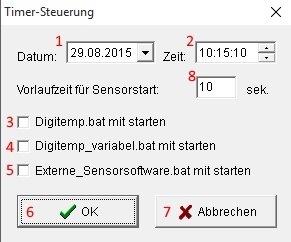

Hilfe Datei zu Brauerei V 1.52 – by Emilio – HOME
Timersteuerung:
Beim Start der Timersteuerung öffnet sich folgendes Fenster

Datum des Braubegins
Uhrzeit des Braubegins
Zeitverzögerung zwischen Start der Sensorsoftware und des Brauvorgangs
Digitemp.bat bei Braubegin starten
Digitemp_variabel.bat bei Braubegin starten
Externe_Sensorsoftware.bat bei Braubegin starten
OK – Timer Starten
Abbrechen – Timer stoppen bzw. Dialog abbrechen